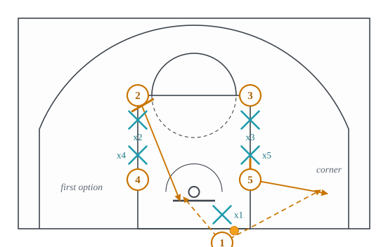
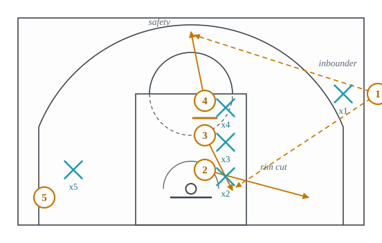
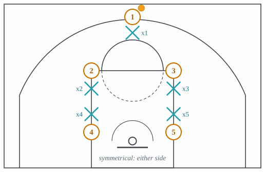
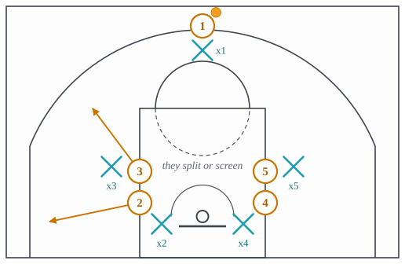
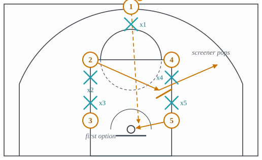
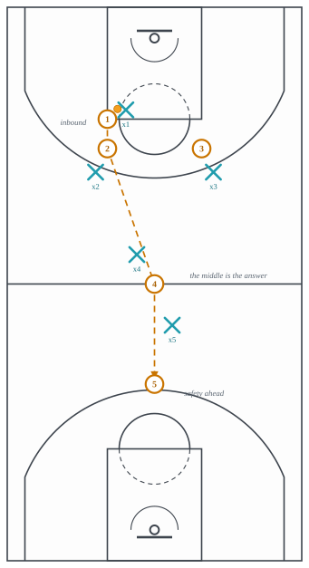
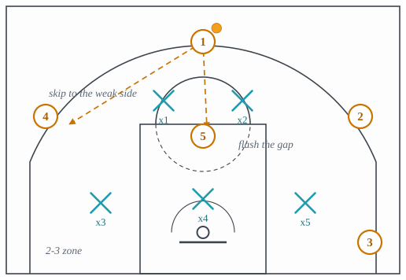

3.12: Special Situations, Offense
Chapter 3: Offense
Every lecture so far has assumed a possession that began with a rebound or a made basket and a defense that got back. This one covers the possessions that begin otherwise: a ball handed to a player standing out of bounds, a whistle and a huddle, a defense that starts guarding at the far baseline, and a defense that guards areas instead of players. In each, something the offense normally has is missing, and something else is available instead.
Section 1 is the two inbounds situations, BLOB and SLOB, and the two sets they are usually run from, the box and the stack. Section 2 is the ATO, the after-timeout possession. Section 3 is the press break. Section 4 is zone offense.
1 Inbounding
A BLOB is a baseline out of bounds play: the ball is inbounded from under the offense’s own basket, as in Figure 1. What the offense loses is a dribble and a passer on the floor. What it gains is that the inbounder can see all nine other players at once, the defense cannot guard both the rim and the perimeter from that distance, and there are five seconds in which the defense must guard cuts it cannot watch and the ball at the same time.

- Setup
- The inbounder out of bounds under the basket. Four attackers in a box (two elbows, two blocks) or a stack (two on each block).
- Trigger
- The referee hands the ball over; the inbounder slaps it or calls the play.
- Read
- The inbounder reads in the order the play gives him: the rim cutter first, because it is a layup; the shooter coming off the second screen; then the safety, a guard who has come high so the ball can be entered without a five-second violation. What makes BLOBs score is that the defenders nearest the rim have to watch both their man and a ball they cannot see behind them.
- Payoff
- A layup or an open shot, from a possession that began with no dribble and no advantage.
- Beaten by
- Switching every screen, so no cutter is ever free, and a defender on the ball with his hands up to shrink the passing angles; or a zone under the basket, which guards the areas the cuts go to rather than the cutters. Lecture 4.8.
A SLOB is a sideline out of bounds play, inbounded from the sideline in the front court, as in Figure 2. It is the harder of the two, because the inbounder is level with the play rather than behind it and the pass has to travel across the defense rather than into it. Most SLOBs therefore have a safety valve first and a scoring action second, and many are designed simply to get the ball in and flow into the offense of the earlier lectures.

- Setup
- The inbounder on the sideline at the free-throw line extended. Three attackers stacked in a line up the lane, one in the far corner.
- Trigger
- The ball is handed over.
- Read
- The inbounder reads the rim cut first, then the corner, then the safety popping to the top. If nothing is open, the ball goes to the safety and the possession becomes an ordinary half-court possession with four seconds gone.
- Payoff
- A layup if the defense sleeps, and a clean entry into the offense otherwise.
- Beaten by
- Denying the first pass and forcing a timeout or a five-second call; switching the stack screens. Lecture 4.8.
Both are run from named shapes. The box set is four players in a square at the elbows and blocks, as in Figure 3: symmetrical, so the same play can be run to either side, and every player is one screen away from every other. The stack is two players on each block, one above the other, as in Figure 4: the two in a stack can screen for each other or split in opposite directions, and their defenders cannot watch both.


2 The ATO
An ATO is an after-timeout possession, as in Figure 5. It is the one moment in a game when a coach can guarantee that all five of his players know the next four seconds and the defense has not seen this sequence today, which is why it is where the best set plays are spent. The cost is the same as any set play’s, and the other cost is information: every ATO a team runs this season is on video for every opponent, so the good ones are variations on a shape the opponent has already seen.

- Setup
- A named set, five players who have just been told the play, and a defense that has also just been coached but cannot know which play is coming.
- Trigger
- The inbound or the first pass after the timeout.
- Read
- The first option is scripted; the second and third are enumerated in advance. What a good ATO does that a bad one does not is give the ball-handler an answer for the two most likely coverages, so the possession does not collapse into an isolation with eight seconds left.
- Payoff
- The shot the coach chose, for the player he chose, against a defense that could not prepare for it specifically.
- Beaten by
- Scouting: the same shape run twice in a season is guarded the second time. And by switching, which takes the screens out of any script. Lecture 4.8.
3 The press break
A press guards the offense full court, and the press break is the answer, as in Figure 6. The principle is one sentence: the middle beats the press. A ball moved up a sideline has a sideline and a half-court line acting as extra defenders and can be trapped against them; a ball moved through the middle of the floor cannot be trapped, because there is no line to trap it against and the pass out has two directions.

- Setup
- Four spots rather than four players: two receivers near the inbounds, one in the middle of the floor at or above half court, one deep ahead as the safety. The best passer inbounds.
- Trigger
- The inbounds pass, or the first trap.
- Read
- The receiver catches and turns to face the whole floor before he dribbles. If two defenders come, the pass goes to the middle, because a trap on the sideline leaves the middle by definition. The middle player catches facing up and looks ahead first: the deep player is often alone, because a press commits defenders in front of the ball. If nothing is ahead, he reverses the ball and the press has still been beaten, because the defense has to reset.
- Payoff
- A four-on-three or a layup at the far end, since a press that fails has committed players behind the ball.
- Beaten by
- A press that denies the inbounds pass rather than trapping after it, which attacks the five-second count instead of the dribble; or a defense that takes away the middle first and lets the ball go up a sideline into a trap. Lecture 4.7.
4 Zone offense
Zone offense is what an offense does when defenders guard areas rather than players, as in Figure 7. Screens matter less, because a zone defender does not follow a man into one; what matters is where the seams are. Three principles cover most of it, and each has appeared earlier in this chapter under another name.
Overload. Put more attackers on one side than the zone has defenders for. A 2-3 zone has two defenders on the ball side above the free-throw line and one below; four attackers on that side make somebody guard two.
Flash the middle. Every zone has a soft spot where its rows meet, usually the free-throw line. The flash of lecture 3.7 puts a player in it facing the basket, and from there he is looking at the back row from behind.
Skip it. A zone shifts as the ball moves; the skip pass of lecture 3.10 moves the ball faster than the zone can shift, and the closeout that results is the longest one available.

- Setup
- Attackers in the gaps of the zone rather than in front of its defenders: for a 2-3, one at the top, two at the wings or slots, one in each corner, with a big able to flash to the free-throw line.
- Trigger
- The zone shifts to the ball.
- Read
- Ball reversal first, because a zone that is shifting cannot also close out. Then the three principles in order: is somebody overloaded; is the middle open; is the far side open for a skip. A shot from the corner against a 2-3 draws the bottom defender out, which opens the short corner and the offensive glass behind him.
- Payoff
- An open shot from a seam, or a catch in the middle of the zone facing the rim with the back row behind.
- Beaten by
- A zone that closes out under control and matches up to cutters, which is the match-up zone of lecture 4.6; and by an offense’s own impatience, since one pass short of the open shot is the usual failure.
5 Names heard for which there is no entry yet
Three more names are given by one publisher each, so under this site’s rule none of them has an entry until a second independent source names it. The descriptions are here so the word is not a mystery when it is heard; the rule and the dated diff are in the plan (plan/PLAN.md, section 8.4) and data/sources/glossary_diff_2026-09-22.md.
- Diamond. A four-player formation with two at the elbows, one at the top of the key and one under the rim, which makes it a starting shape like the box set and the stack of Section 1 rather than an action. It is not the diamond press of lecture 4.7 or the diamond-and-one of lecture 4.6, which are defenses named for the shape their own players stand in.
- Runner. A player who runs the baseline from one side of the floor to the other and finishes at the far wing or in the far corner. The glossary that names it says runners are used to attack zones and to create overloads, which puts the word with the zone offense of Section 4 and not with the rim runner of lecture 3.1.
- Flood. Two or more players moving quickly to one side of the floor so that more attackers are on that side than the defense has defenders for. That is the overload of Section 4, named for the movement that makes it rather than for the shape it ends in.
The idea to carry into lecture 3.13 is that these possessions each have their own clock. An inbounds play has five seconds, an ATO has a full possession but one chance, a press break has ten seconds to cross half court. The last lecture of this chapter is about the clock itself.